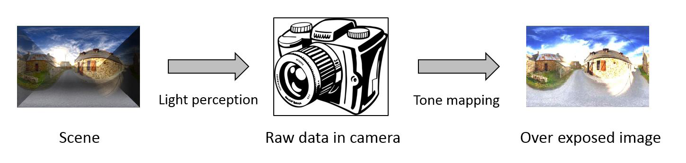
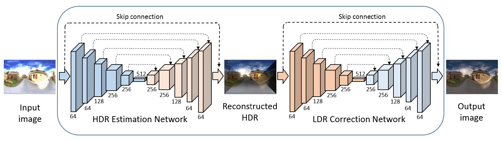

Image Correction via Deep Reciprocating HDR Transformation |
|  |
|  |
Abstract
Image correction aims to adjust an input image into a visually pleasing one. Existing approaches are proposed mainly from the perspective of image pixel manipulation. They are not effective to recover the details in the under/over exposed regions. In this paper, we revisit the image formation procedure and notice that the missing details in these regions exist in the corresponding high dynamic range (HDR) data. These details are well perceived by the human eyes but diminished in the low dynamic range (LDR) domain because of the tone mapping process. Therefore, we formulate the image correction task as an HDR transformation process and propose a novel approach called Deep Reciprocating HDR Transformation (DRHT). Given an input LDR image, we first reconstruct the missing details in the HDR domain. We then perform tone mapping on the predicted HDR data to generate the output LDR image with the recovered details. To this end, we propose a united framework consisting of two CNNs for HDR reconstruction and tone mapping. They are integrated end-to-end for joint training and prediction. Experiments on the standard benchmarks demonstrate that the proposed method performs favorably against state-of-the-art image correction methods.
Downloads
| [DRHT.pdf] | : The paper. |
| [Results.zip] | : Experimental results. |
| [Code.zip] | : Available on Github. |
BibTex (DOI)